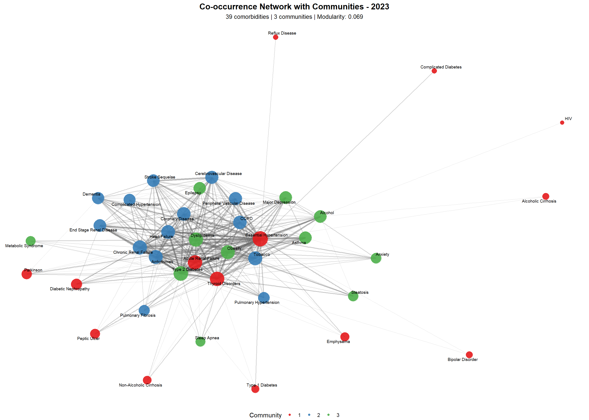

![]()
Code
# ==========================
# ANÁLISIS INTEGRAL DE REDES DE COMORBILIDAD HOSPITALARIA
# VERSIÓN UNIFICADA: 2019 vs 2023
# ==========================
# Load/Install packages
use_packages <- function(pkgs){
new_pkgs <- pkgs[!(pkgs %in% installed.packages()[,"Package"])]
if(length(new_pkgs)) install.packages(new_pkgs, dependencies = TRUE)
invisible(lapply(pkgs, library, character.only = TRUE))
}
# Required packages
use_packages(c(
"MASS", # Statistical functions (loaded first to avoid conflicts)
"tidyverse", # Data manipulation and ggplot2
"igraph", # Network analysis
"tidygraph", # Tidy network manipulation
"ggraph", # Network visualization
"visNetwork", # Interactive networks
"kableExtra", # Table formatting
"viridis", # Color palettes
"patchwork", # Combine plots
"reshape2", # Data reshaping
"htmlwidgets", # For saving widgets HTML
"htmltools", # For HTML tags
"RColorBrewer", # Color palettes
"corrplot", # Correlation plots
"dendextend", # Enhanced dendrograms
"plotly" # Interactive plots
))
Sys.setenv("VROOM_CONNECTION_SIZE" = 10000000000)
base_path <- gsub("/docs", "", getwd())
output_dir <- file.path(base_path, "output_files")
if (!dir.exists(output_dir)) dir.create(output_dir, recursive = TRUE)
# ==========================
# SECTION 1: DATA PREPARATION
# ==========================
# ICD-10 normalization functions
icd3_norm <- function(x){
x <- stringr::str_to_upper(stringr::str_trim(x))
x <- stringr::str_replace_all(x, "\\.", "")
stringr::str_sub(x, 1, 3)
}
icd4_norm <- function(x){
x <- stringr::str_to_upper(stringr::str_trim(x))
x <- stringr::str_replace_all(x, "\\.", "")
stringr::str_sub(x, 1, 4)
}
# KEEP SPANISH NAMES FOR DATA COMPATIBILITY (but remove underscores for display)
detailed_comorbidity_groups <- list(
# CARDIOVASCULAR DISEASES
"CV_Hipertensión_Esencial" = c("I10"),
"CV_Hipertensión_Complicada" = c("I11", "I12", "I13", "I15"),
"CV_Enfermedad_Coronaria" = c("I20", "I21", "I22", "I23", "I24", "I25"),
"CV_Insuficiencia_Cardíaca" = c("I50", "I110", "I130", "I132"),
"CV_Arritmias" = c("I44", "I45", "I46", "I47", "I48", "I49"),
"CV_Enfermedad_Cerebrovascular" = c("I60", "I61", "I62", "I63", "I64", "I65", "I66", "I67", "I68", "I69"),
"CV_Enfermedad_Vascular_Periférica" = c("I70", "I71", "I73", "I74", "I77"),
# METABOLIC AND ENDOCRINE DISEASES
"MET_Diabetes_Tipo1" = c("E10"),
"MET_Diabetes_Tipo2" = c("E11"),
"MET_Diabetes_Complicada" = c("E12", "E13", "E14"),
"MET_Obesidad" = c("E66", "E660", "E661", "E662", "E663", "E664", "E665", "E666", "E667", "E668", "E669"),
"MET_Dislipidemia" = c("E78"),
"MET_Síndrome_Metabólico" = c("E88", "E888"),
"MET_Trastornos_Tiroideos" = c("E00", "E01", "E02", "E03", "E04", "E05", "E06", "E07"),
# RESPIRATORY DISEASES
"RESP_EPOC" = c("J44"),
"RESP_Asma" = c("J45", "J46"),
"RESP_Bronquitis_Crónica" = c("J41", "J42"),
"RESP_Enfisema" = c("J43"),
"RESP_Fibrosis_Pulmonar" = c("J84"),
"RESP_Hipertensión_Pulmonar" = c("I27"),
"RESP_Apnea_Sueño" = c("G473"),
# RENAL DISEASES
"REN_Insuficiencia_Renal_Aguda" = c("N17"),
"REN_Insuficiencia_Renal_Crónica" = c("N18"),
"REN_Enfermedad_Renal_Terminal" = c("N185", "N186"),
"REN_Nefropatía_Diabética" = c("E102", "E112", "E122", "E132", "E142"),
# HEPATIC DISEASES
"HEP_Esteatosis" = c("K760"),
"HEP_Cirrosis_Alcohólica" = c("K703"),
"HEP_Cirrosis_No_Alcohólica" = c("K74"),
"HEP_Hepatitis_Viral" = c("B15", "B16", "B17", "B18", "B19"),
# GASTROINTESTINAL DISEASES
"GI_Enfermedad_Reflujo" = c("K21"),
"GI_Úlcera_Péptica" = c("K25", "K26", "K27", "K28"),
"GI_Enfermedad_Inflamatoria_Intestinal" = c("K50", "K51"),
"GI_Síndrome_Intestino_Irritable" = c("K58"),
# NEUROLOGICAL DISORDERS
"NEURO_Demencia" = c("F00", "F01", "F02", "F03", "G30"),
"NEURO_Parkinson" = c("G20", "G21", "G22"),
"NEURO_Epilepsia" = c("G40", "G41"),
"NEURO_ACV_Secuelas" = c("I69"),
# PSYCHIATRIC DISORDERS
"PSI_Depresión_Mayor" = c("F32", "F33"),
"PSI_Trastorno_Bipolar" = c("F30", "F31"),
"PSI_Ansiedad" = c("F41"),
# SUBSTANCE DISORDERS
"SUST_Alcohol" = c("F10"),
"SUST_Tabaco" = c("F17", "Z720"),
"SUST_Opioides" = c("F11"),
# CHRONIC INFECTIOUS DISEASES
"INF_VIH" = c("B20", "B21", "B22", "B23", "B24"),
"INF_Tuberculosis" = c("A15", "A16", "A17", "A18", "A19"),
"INF_Hepatitis_C" = c("B182"),
"INF_Hepatitis_B" = c("B180", "B181")
)
# English translations for display (without underscores)
english_names <- list(
"CV_Hipertensión_Esencial" = "Essential Hypertension",
"CV_Hipertensión_Complicada" = "Complicated Hypertension",
"CV_Enfermedad_Coronaria" = "Coronary Disease",
"CV_Insuficiencia_Cardíaca" = "Heart Failure",
"CV_Arritmias" = "Arrhythmias",
"CV_Enfermedad_Cerebrovascular" = "Cerebrovascular Disease",
"CV_Enfermedad_Vascular_Periférica" = "Peripheral Vascular Disease",
"MET_Diabetes_Tipo1" = "Type 1 Diabetes",
"MET_Diabetes_Tipo2" = "Type 2 Diabetes",
"MET_Diabetes_Complicada" = "Complicated Diabetes",
"MET_Obesidad" = "Obesity",
"MET_Dislipidemia" = "Dyslipidemia",
"MET_Síndrome_Metabólico" = "Metabolic Syndrome",
"MET_Trastornos_Tiroideos" = "Thyroid Disorders",
"RESP_EPOC" = "COPD",
"RESP_Asma" = "Asthma",
"RESP_Bronquitis_Crónica" = "Chronic Bronchitis",
"RESP_Enfisema" = "Emphysema",
"RESP_Fibrosis_Pulmonar" = "Pulmonary Fibrosis",
"RESP_Hipertensión_Pulmonar" = "Pulmonary Hypertension",
"RESP_Apnea_Sueño" = "Sleep Apnea",
"REN_Insuficiencia_Renal_Aguda" = "Acute Renal Failure",
"REN_Insuficiencia_Renal_Crónica" = "Chronic Renal Failure",
"REN_Enfermedad_Renal_Terminal" = "End Stage Renal Disease",
"REN_Nefropatía_Diabética" = "Diabetic Nephropathy",
"HEP_Esteatosis" = "Steatosis",
"HEP_Cirrosis_Alcohólica" = "Alcoholic Cirrhosis",
"HEP_Cirrosis_No_Alcohólica" = "Non-Alcoholic Cirrhosis",
"HEP_Hepatitis_Viral" = "Viral Hepatitis",
"GI_Enfermedad_Reflujo" = "Reflux Disease",
"GI_Úlcera_Péptica" = "Peptic Ulcer",
"GI_Enfermedad_Inflamatoria_Intestinal" = "Inflammatory Bowel Disease",
"GI_Síndrome_Intestino_Irritable" = "Irritable Bowel Syndrome",
"NEURO_Demencia" = "Dementia",
"NEURO_Parkinson" = "Parkinson",
"NEURO_Epilepsia" = "Epilepsy",
"NEURO_ACV_Secuelas" = "Stroke Sequelae",
"PSI_Depresión_Mayor" = "Major Depression",
"PSI_Trastorno_Bipolar" = "Bipolar Disorder",
"PSI_Ansiedad" = "Anxiety",
"SUST_Alcohol" = "Alcohol",
"SUST_Tabaco" = "Tobacco",
"SUST_Opioides" = "Opioids",
"INF_VIH" = "HIV",
"INF_Tuberculosis" = "Tuberculosis",
"INF_Hepatitis_C" = "Hepatitis C",
"INF_Hepatitis_B" = "Hepatitis B"
)
# Function to translate names to English for display
translate_name <- function(x) {
if(x %in% names(english_names)) {
return(english_names[[x]])
} else {
return(gsub("_", " ", x))
}
}
# Function to format names for display (simplified)
format_name <- function(x) {
translate_name(x)
}
# Function to load and process data
load_and_process_year <- function(year) {
file_pattern <- paste0("GRD_PUBLICO_.*", year, ".*\\.csv$")
file_path <- list.files(file.path(base_path, "data"), pattern = file_pattern, full.names = TRUE)
if (length(file_path) == 0) {
stop(paste("No file found for year", year))
}
data <- readr::read_delim(
file_path, delim = "|", escape_double = FALSE,
col_types = cols(.default = col_character(), IR_29301_COD_GRD = col_number()),
trim_ws = TRUE, progress = FALSE
)
data$year <- year
# Load catalogs
codigos_grd <- readxl::read_excel(file.path(base_path, "data/códigos grd.xlsx"), sheet = "IR - GRD") %>%
`colnames<-`(c("IR_29301_COD_GRD", "COD_GRD_CAT"))
codigos_hosp <- readxl::read_excel(file.path(base_path, "data/códigos grd.xlsx"), sheet = "Hospitales") %>%
`colnames<-`(c("COD_HOSPITAL", "COD_HOSPITAL_CAT")) %>%
mutate(COD_HOSPITAL = as.character(COD_HOSPITAL))
data <- data %>%
left_join(codigos_grd, by = "IR_29301_COD_GRD") %>%
left_join(codigos_hosp, by = "COD_HOSPITAL")
# Process dates
data <- data %>%
mutate(
FECHA_NACIMIENTO = as.Date(FECHA_NACIMIENTO, format = "%Y-%m-%d"),
FECHA_INGRESO = if_else(year == 2023,
as.Date(FECHA_INGRESO, format = "%d-%m-%Y"),
as.Date(FECHA_INGRESO, format = "%Y-%m-%d")),
FECHAALTA = if_else(year == 2023,
as.Date(FECHAALTA, format = "%d-%m-%Y"),
as.Date(FECHAALTA, format = "%Y-%m-%d")),
EDAD = round(as.numeric(difftime(FECHA_INGRESO, FECHA_NACIMIENTO, units = "days")) / 365.25, 0),
length_of_stay = as.numeric(difftime(FECHAALTA, FECHA_INGRESO, units = "days")),
estado_alta = case_when(
TIPOALTA == "FALLECIDO" ~ "Deceased",
TIPOALTA %in% c("DOMICILIO", "ALTA VOLUNTARIA", "HOSPITALIZACIÓN DOMICILIARIA") ~ "Discharged",
TRUE ~ "Other"
)
) %>%
filter(!is.na(EDAD), SEXO != "DESCONOCIDO")
# Detect comorbidities
diag_cols <- paste0("DIAGNOSTICO", 2:35)
diag_cols <- intersect(diag_cols, names(data))
for(col in diag_cols) {
data[[paste0(col, "_C3")]] <- icd3_norm(data[[col]])
data[[paste0(col, "_C4")]] <- icd4_norm(data[[col]])
}
c3_cols <- paste0(diag_cols, "_C3")
c4_cols <- paste0(diag_cols, "_C4")
for(group_name in names(detailed_comorbidity_groups)) {
target_codes <- detailed_comorbidity_groups[[group_name]]
if(any(nchar(target_codes) == 4)) {
data[[group_name]] <- apply(
data[, c4_cols], 1,
function(x) any(sapply(x, function(code) any(startsWith(code, target_codes))), na.rm = TRUE)
)
} else {
data[[group_name]] <- apply(
data[, c3_cols], 1,
function(x) any(x %in% target_codes, na.rm = TRUE)
)
}
data[[group_name]] <- as.integer(data[[group_name]])
}
comorb_vars <- names(detailed_comorbidity_groups)
data$n_comorbidities <- rowSums(data[, comorb_vars], na.rm = TRUE)
data <- data %>% select(-ends_with("_C3"), -ends_with("_C4"))
return(data)
}
# Load data
output_file_2019 <- file.path(output_dir, "data_2019_processed.rds")
output_file_2023 <- file.path(output_dir, "data_2023_processed.rds")
if (file.exists(output_file_2019)) {
data_2019 <- readRDS(output_file_2019)
} else {
data_2019 <- load_and_process_year(2019)
saveRDS(data_2019, output_file_2019)
}
if (file.exists(output_file_2023)) {
data_2023 <- readRDS(output_file_2023)
} else {
data_2023 <- load_and_process_year(2023)
saveRDS(data_2023, output_file_2023)
}
# Define consistent color palettes
community_colors_palette <- c("#E41A1C", "#377EB8", "#4DAF4A", "#984EA3",
"#FF7F00", "#FFFF33", "#A65628", "#F781BF",
"#999999", "#66C2A5", "#FC8D62", "#8DA0CB")
category_colors <- c(
"Cardiovascular" = "#e74c3c",
"Metabolic" = "#f39c12",
"Respiratory" = "#3498db",
"Renal" = "#9b59b6",
"Hepatic" = "#16a085",
"Gastrointestinal" = "#f1c40f",
"Neurological" = "#8e44ad",
"Psychiatric" = "#e67e22",
"Substances" = "#2c3e50",
"Infectious" = "#c0392b"
)
# ==========================
# SECTION 2: DESCRIPTIVE ANALYSIS
# ==========================
# General Data Description
info_data <- data.frame(
Characteristic = c("Total Records 2019",
"Total Records 2023",
"Unique Comorbidities",
"Analysis Period",
"Average Comorbidities 2019",
"Average Comorbidities 2023",
"Median Comorbidities 2019",
"Median Comorbidities 2023"),
Value = c(format(nrow(data_2019), big.mark = ","),
format(nrow(data_2023), big.mark = ","),
as.character(length(detailed_comorbidity_groups)),
"2019 vs 2023",
round(mean(data_2019$n_comorbidities), 2),
round(mean(data_2023$n_comorbidities), 2),
median(data_2019$n_comorbidities),
median(data_2023$n_comorbidities))
)
kable(info_data,
caption = "General Dataset Characteristics",
format = "html",
col.names = c("Characteristic", "Value"),
align = c("l", "r")) %>%
kable_styling(bootstrap_options = c("striped", "hover"),
full_width = FALSE)| Characteristic | Value |
|---|---|
| Total Records 2019 | 1,151,317 |
| Total Records 2023 | 1,039,538 |
| Unique Comorbidities | 47 |
| Analysis Period | 2019 vs 2023 |
| Average Comorbidities 2019 | 1.21 |
| Average Comorbidities 2023 | 1.56 |
| Median Comorbidities 2019 | 0 |
| Median Comorbidities 2023 | 1 |
Code
# ==========================
# SECTION 3: PREVALENCE ANALYSIS
# ==========================
# Calculate prevalence for each year
prevalence_2019 <- data_2019 %>%
select(all_of(names(detailed_comorbidity_groups))) %>%
summarise_all(mean) %>%
pivot_longer(everything(), names_to = "Comorbidity", values_to = "Prevalence2019") %>%
mutate(Prevalence2019 = round(Prevalence2019 * 100, 2))
prevalence_2023 <- data_2023 %>%
select(all_of(names(detailed_comorbidity_groups))) %>%
summarise_all(mean) %>%
pivot_longer(everything(), names_to = "Comorbidity", values_to = "Prevalence2023") %>%
mutate(Prevalence2023 = round(Prevalence2023 * 100, 2))
# Combine and calculate changes
comorbidity_comparison <- prevalence_2019 %>%
left_join(prevalence_2023, by = "Comorbidity") %>%
mutate(
ComorbidityName = sapply(Comorbidity, format_name),
AbsoluteChange = Prevalence2023 - Prevalence2019,
RelativeChange = round((Prevalence2023 - Prevalence2019) / Prevalence2019 * 100, 1),
Category = case_when(
str_starts(Comorbidity, "CV_") ~ "Cardiovascular",
str_starts(Comorbidity, "MET_") ~ "Metabolic",
str_starts(Comorbidity, "RESP_") ~ "Respiratory",
str_starts(Comorbidity, "REN_") ~ "Renal",
str_starts(Comorbidity, "HEP_") ~ "Hepatic",
str_starts(Comorbidity, "GI_") ~ "Gastrointestinal",
str_starts(Comorbidity, "NEURO_") ~ "Neurological",
str_starts(Comorbidity, "PSI_") ~ "Psychiatric",
str_starts(Comorbidity, "SUST_") ~ "Substances",
str_starts(Comorbidity, "INF_") ~ "Infectious",
TRUE ~ "Other"
)
) %>%
arrange(desc(Prevalence2023))
# Top 15 Most Common Comorbidities
top_comorbidities <- comorbidity_comparison %>%
head(15) %>%
select(ComorbidityName, Category, Prevalence2019, Prevalence2023, AbsoluteChange, RelativeChange)
kable(top_comorbidities,
caption = "Top 15 Most Common Comorbidities: Comparative Prevalence",
format = "html",
col.names = c("Comorbidity", "Category", "2019 (%)", "2023 (%)", "Absolute Change", "Relative Change (%)"),
align = c("l", "l", "r", "r", "r", "r")) %>%
kable_styling(bootstrap_options = c("striped", "hover"),
full_width = FALSE) %>%
column_spec(5, color = ifelse(top_comorbidities$AbsoluteChange > 0, "red", "green")) %>%
column_spec(6, color = ifelse(top_comorbidities$RelativeChange > 0, "red", "green"))| Comorbidity | Category | 2019 (%) | 2023 (%) | Absolute Change | Relative Change (%) |
|---|---|---|---|---|---|
| Essential Hypertension | Cardiovascular | 25.57 | 28.54 | 2.97 | 11.6 |
| Type 2 Diabetes | Metabolic | 11.99 | 14.91 | 2.92 | 24.4 |
| Obesity | Metabolic | 7.30 | 11.37 | 4.07 | 55.8 |
| Thyroid Disorders | Metabolic | 6.89 | 8.77 | 1.88 | 27.3 |
| Dyslipidemia | Metabolic | 4.89 | 7.52 | 2.63 | 53.8 |
| Tobacco | Substances | 5.54 | 7.11 | 1.57 | 28.3 |
| Chronic Renal Failure | Renal | 5.41 | 5.49 | 0.08 | 1.5 |
| Acute Renal Failure | Renal | 3.09 | 5.10 | 2.01 | 65.0 |
| Arrhythmias | Cardiovascular | 3.95 | 4.73 | 0.78 | 19.7 |
| Coronary Disease | Cardiovascular | 3.26 | 4.05 | 0.79 | 24.2 |
| Asthma | Respiratory | 2.86 | 3.90 | 1.04 | 36.4 |
| Heart Failure | Cardiovascular | 2.81 | 3.70 | 0.89 | 31.7 |
| Major Depression | Psychiatric | 1.86 | 2.69 | 0.83 | 44.6 |
| COPD | Respiratory | 1.98 | 2.54 | 0.56 | 28.3 |
| Cerebrovascular Disease | Cardiovascular | 2.12 | 2.47 | 0.35 | 16.5 |
Code
# Distribution of number of comorbidities
distribution_2019 <- data_2019 %>%
count(n_comorbidities) %>%
mutate(Year = 2019, Percentage = round(n / nrow(data_2019) * 100, 2))
distribution_2023 <- data_2023 %>%
count(n_comorbidities) %>%
mutate(Year = 2023, Percentage = round(n / nrow(data_2023) * 100, 2))
distribution_combined <- bind_rows(distribution_2019, distribution_2023)
# Visualization of comorbidity distribution
ggplot(distribution_combined, aes(x = factor(n_comorbidities), y = Percentage, fill = factor(Year))) +
geom_col(position = "dodge", alpha = 0.8) +
scale_fill_manual(values = c("2019" = "steelblue", "2023" = "coral")) +
labs(x = "Number of Comorbidities",
y = "Percentage (%)",
fill = "Year",
title = "Distribution of Comorbidity Burden",
subtitle = "Comparative Analysis 2019 vs 2023") +
theme_minimal() +
theme(plot.title = element_text(size = 14, face = "bold"),
legend.position = "bottom")Code
# ==========================
# SECTION 4: NETWORK CONSTRUCTION
# ==========================
create_cooccurrence_network <- function(data, year_label) {
comorb_vars <- names(detailed_comorbidity_groups)
# Co-occurrence matrix
comorb_matrix <- as.matrix(data[, comorb_vars])
co_matrix <- t(comorb_matrix) %*% comorb_matrix
diag(co_matrix) <- 0
# Filter weak links (keep top 30%)
co_values <- co_matrix[upper.tri(co_matrix)]
co_values <- co_values[co_values > 0]
if(length(co_values) > 0) {
threshold <- quantile(co_values, probs = 0.70)
co_matrix[co_matrix < threshold] <- 0
}
g <- graph_from_adjacency_matrix(co_matrix, mode = "undirected", weighted = TRUE, diag = FALSE)
E(g)$weight_original <- E(g)$weight
E(g)$weight <- log1p(E(g)$weight)
g <- delete_vertices(g, degree(g) == 0)
# Detect communities using Louvain algorithm
if(vcount(g) > 0) {
communities <- cluster_louvain(g, weights = E(g)$weight)
V(g)$community <- membership(communities)
V(g)$modularity <- modularity(communities)
# Calculate K-core
V(g)$kcore <- coreness(g)
}
# Add categories
V(g)$category <- sapply(V(g)$name, function(x) {
case_when(
str_starts(x, "CV_") ~ "Cardiovascular",
str_starts(x, "MET_") ~ "Metabolic",
str_starts(x, "RESP_") ~ "Respiratory",
str_starts(x, "REN_") ~ "Renal",
str_starts(x, "HEP_") ~ "Hepatic",
str_starts(x, "GI_") ~ "Gastrointestinal",
str_starts(x, "NEURO_") ~ "Neurological",
str_starts(x, "PSI_") ~ "Psychiatric",
str_starts(x, "SUST_") ~ "Substances",
str_starts(x, "INF_") ~ "Infectious",
TRUE ~ "Other"
)
})
return(g)
}
# Create networks
co_network_2019 <- create_cooccurrence_network(data_2019, "2019")
co_network_2023 <- create_cooccurrence_network(data_2023, "2023")
# ==========================
# SECTION 5: NETWORK METRICS
# ==========================
calculate_network_stats <- function(g, year_label) {
if(vcount(g) == 0) return(NULL)
transitivity_global <- round(transitivity(g, type = "global"), 4)
transitivity_avg <- round(transitivity(g, type = "average"), 4)
assortativity <- round(assortativity_degree(g), 4)
# Calculate centralization metrics
degree_cent <- round(centr_degree(g)$centralization, 4)
closeness_cent <- round(centr_clo(g)$centralization, 4)
betweenness_cent <- round(centr_betw(g)$centralization, 4)
eigen_cent <- round(centr_eigen(g)$centralization, 4)
data.frame(
Year = year_label,
Nodes = vcount(g),
Edges = ecount(g),
Density = round(edge_density(g), 4),
MeanDegree = round(mean(degree(g)), 2),
SDDegree = round(sd(degree(g)), 2),
ClusteringGlobal = transitivity_global,
ClusteringAverage = transitivity_avg,
Assortativity = assortativity,
Modularity = ifelse(!is.null(V(g)$modularity), round(V(g)$modularity[1], 4), NA),
Communities = ifelse(!is.null(V(g)$community), length(unique(V(g)$community)), NA),
Diameter = diameter(g, directed = FALSE),
MeanPathLength = round(mean_distance(g, directed = FALSE), 2),
DegreeCentralization = degree_cent,
ClosenessCentralization = closeness_cent,
BetweennessCentralization = betweenness_cent,
EigenvectorCentralization = eigen_cent,
MaxKCore = max(V(g)$kcore)
)
}
network_stats <- rbind(
calculate_network_stats(co_network_2019, "2019"),
calculate_network_stats(co_network_2023, "2023")
)
# Display network statistics
stats_display <- network_stats %>%
select(Year, Nodes, Edges, Density, MeanDegree, ClusteringGlobal,
Modularity, Communities, Diameter, MeanPathLength, MaxKCore)
kable(stats_display,
caption = "Extended Network Statistics: 2019 vs 2023",
format = "html",
col.names = c("Year", "Nodes", "Edges", "Density", "Mean Degree",
"Clustering", "Modularity", "Communities", "Diameter",
"Mean Path", "Max K-Core"),
digits = 3,
align = 'c') %>%
kable_styling(bootstrap_options = c("striped", "hover", "condensed"),
full_width = FALSE,
position = "center") %>%
column_spec(1, bold = TRUE) %>%
row_spec(0, bold = TRUE, color = "white", background = "#2c3e50")| Year | Nodes | Edges | Density | Mean Degree | Clustering | Modularity | Communities | Diameter | Mean Path | Max K-Core |
|---|---|---|---|---|---|---|---|---|---|---|
| 2019 | 39 | 310 | 0.418 | 15.90 | 0.720 | 0.075 | 3 | 17.759 | 11.16 | 16 |
| 2023 | 39 | 313 | 0.422 | 16.05 | 0.705 | 0.069 | 3 | 19.140 | 11.69 | 16 |
Code
# ==========================
# SECTION 6: CENTRALITY ANALYSIS
# ==========================
calculate_centrality <- function(g, year_label) {
if(vcount(g) == 0) return(NULL)
data.frame(
Comorbidity = sapply(V(g)$name, format_name),
Year = year_label,
Category = V(g)$category,
Community = V(g)$community,
Degree = degree(g),
DegreeNorm = round(degree(g, normalized = TRUE), 4),
Strength = round(strength(g), 0),
Betweenness = round(betweenness(g), 1),
BetweennessNorm = round(betweenness(g, normalized = TRUE), 4),
Closeness = round(closeness(g), 4),
ClosenessNorm = round(closeness(g, normalized = TRUE), 4),
Eigenvector = round(eigen_centrality(g)$vector, 4),
PageRank = round(page_rank(g)$vector, 5),
HubScore = round(hub_score(g)$vector, 4),
AuthorityScore = round(authority_score(g)$vector, 4),
KCore = V(g)$kcore,
stringsAsFactors = FALSE
)
}
centrality_2019 <- calculate_centrality(co_network_2019, "2019")
centrality_2023 <- calculate_centrality(co_network_2023, "2023")
# Display top 10 by multiple metrics
top_centrality_2023 <- centrality_2023 %>%
arrange(desc(PageRank)) %>%
head(10) %>%
select(Comorbidity, Category, Degree, Strength, BetweennessNorm,
ClosenessNorm, Eigenvector, PageRank, KCore)
kable(top_centrality_2023,
caption = "Top 10 Comorbidities by Centrality Metrics - 2023",
format = "html",
row.names = F,
col.names = c("Comorbidity", "Category", "Degree", "Strength", "Between.",
"Closeness", "Eigen.", "PageRank", "K-Core"),
digits = 4,
align = c('l', 'l', rep('r', 7))) %>%
kable_styling(bootstrap_options = c("striped", "hover", "condensed"),
full_width = FALSE) %>%
column_spec(1, bold = TRUE, width = "150px") %>%
row_spec(1:3, background = "#f0f0f0")| Comorbidity | Category | Degree | Strength | Between. | Closeness | Eigen. | PageRank | K-Core |
|---|---|---|---|---|---|---|---|---|
| Essential Hypertension | Cardiovascular | 38 | 338 | 0.1792 | 0.1125 | 1.0000 | 0.0766 | 16 |
| Type 2 Diabetes | Metabolic | 32 | 278 | 0.0028 | 0.0994 | 0.9348 | 0.0528 | 16 |
| Thyroid Disorders | Metabolic | 33 | 262 | 0.1238 | 0.1105 | 0.8628 | 0.0518 | 16 |
| Acute Renal Failure | Renal | 31 | 248 | 0.0341 | 0.1052 | 0.8500 | 0.0474 | 16 |
| Chronic Renal Failure | Renal | 28 | 231 | 0.0228 | 0.0980 | 0.8329 | 0.0440 | 16 |
| Dyslipidemia | Metabolic | 29 | 234 | 0.0427 | 0.0999 | 0.8417 | 0.0440 | 16 |
| Arrhythmias | Cardiovascular | 27 | 219 | 0.0185 | 0.0972 | 0.8131 | 0.0411 | 16 |
| Tobacco | Substances | 27 | 216 | 0.0313 | 0.0984 | 0.7922 | 0.0408 | 16 |
| Obesity | Metabolic | 26 | 214 | 0.0085 | 0.0945 | 0.7919 | 0.0403 | 16 |
| Heart Failure | Cardiovascular | 25 | 206 | 0.0000 | 0.0939 | 0.7912 | 0.0383 | 16 |
Code
# ==========================
# SECTION 7: ADVANCED NETWORK ANALYSIS
# ==========================
# K-core analysis
kcore_analysis_2023 <- data.frame(
Comorbidity = sapply(V(co_network_2023)$name, format_name),
KCore = V(co_network_2023)$kcore,
Strength = strength(co_network_2023)
) %>%
group_by(KCore) %>%
summarise(
Count = n(),
MainComorbidities = paste(head(Comorbidity[order(Strength, decreasing = TRUE)], 3),
collapse = ", "),
MeanStrength = round(mean(Strength), 0)
) %>%
mutate(Year = 2023) %>%
arrange(desc(KCore))
kable(kcore_analysis_2023,
caption = "K-Core Analysis: Network Cohesiveness - 2023",
format = "html",
col.names = c("K-Core", "Count", "Main Comorbidities", "Mean Strength", "Year"),
align = c("c", "r", "l", "r", "c")) %>%
kable_styling(bootstrap_options = c("striped", "hover"),
full_width = FALSE) %>%
column_spec(3, width = "350px")| K-Core | Count | Main Comorbidities | Mean Strength | Year |
|---|---|---|---|---|
| 16 | 19 | Essential Hypertension, Type 2 Diabetes, Thyroid Disorders | 202 | 2023 |
| 15 | 3 | End Stage Renal Disease, Dementia, Complicated Hypertension | 121 | 2023 |
| 13 | 1 | Pulmonary Hypertension | 95 | 2023 |
| 11 | 2 | Diabetic Nephropathy, Pulmonary Fibrosis | 78 | 2023 |
| 9 | 1 | Anxiety | 65 | 2023 |
| 8 | 2 | Steatosis, Parkinson | 58 | 2023 |
| 7 | 3 | Sleep Apnea, Peptic Ulcer, Metabolic Syndrome | 48 | 2023 |
| 5 | 1 | Emphysema | 34 | 2023 |
| 4 | 1 | Non-Alcoholic Cirrhosis | 28 | 2023 |
| 3 | 1 | Type 1 Diabetes | 21 | 2023 |
| 2 | 2 | Bipolar Disorder, Alcoholic Cirrhosis | 13 | 2023 |
| 1 | 3 | Complicated Diabetes, Reflux Disease, HIV | 7 | 2023 |
Code
# Gateway analysis
gateway_analysis <- centrality_2023 %>%
mutate(
GatewayScore = (Degree/max(Degree) +
BetweennessNorm +
Eigenvector +
PageRank/max(PageRank)) / 4
) %>%
arrange(desc(GatewayScore)) %>%
head(10) %>%
mutate(
GatewayScore = round(GatewayScore, 3),
Interpretation = case_when(
GatewayScore > 0.7 ~ "Very high gateway probability",
GatewayScore > 0.5 ~ "High gateway probability",
GatewayScore > 0.3 ~ "Moderate gateway probability",
TRUE ~ "Low gateway probability"
)
) %>%
select(Comorbidity, Category, Degree, BetweennessNorm, Eigenvector,
PageRank, GatewayScore, Interpretation)
kable(gateway_analysis,
caption = "Gateway Comorbidity Analysis - 2023",
format = "html",
col.names = c("Comorbidity", "Category", "Degree", "Betweenness",
"Eigenvector", "PageRank", "Gateway Score", "Interpretation"),
align = c("l", "l", rep("r", 5), "l")) %>%
kable_styling(bootstrap_options = c("striped", "hover"),
full_width = FALSE) %>%
row_spec(1:3, bold = TRUE, background = "#f0f0f0")| Comorbidity | Category | Degree | Betweenness | Eigenvector | PageRank | Gateway Score | Interpretation | |
|---|---|---|---|---|---|---|---|---|
| CV_Hipertensión_Esencial | Essential Hypertension | Cardiovascular | 38 | 0.1792 | 1.0000 | 0.07656 | 0.795 | Very high gateway probability |
| MET_Trastornos_Tiroideos | Thyroid Disorders | Metabolic | 33 | 0.1238 | 0.8628 | 0.05181 | 0.633 | High gateway probability |
| MET_Diabetes_Tipo2 | Type 2 Diabetes | Metabolic | 32 | 0.0028 | 0.9348 | 0.05285 | 0.618 | High gateway probability |
| REN_Insuficiencia_Renal_Aguda | Acute Renal Failure | Renal | 31 | 0.0341 | 0.8500 | 0.04741 | 0.580 | High gateway probability |
| MET_Dislipidemia | Dyslipidemia | Metabolic | 29 | 0.0427 | 0.8417 | 0.04396 | 0.555 | High gateway probability |
| REN_Insuficiencia_Renal_Crónica | Chronic Renal Failure | Renal | 28 | 0.0228 | 0.8329 | 0.04398 | 0.542 | High gateway probability |
| CV_Arritmias | Arrhythmias | Cardiovascular | 27 | 0.0185 | 0.8131 | 0.04106 | 0.520 | High gateway probability |
| SUST_Tabaco | Tobacco | Substances | 27 | 0.0313 | 0.7922 | 0.04080 | 0.517 | High gateway probability |
| MET_Obesidad | Obesity | Metabolic | 26 | 0.0085 | 0.7919 | 0.04035 | 0.503 | High gateway probability |
| CV_Insuficiencia_Cardíaca | Heart Failure | Cardiovascular | 25 | 0.0000 | 0.7912 | 0.03830 | 0.487 | Moderate gateway probability |
Code
# ==========================
# SECTION 8: DEGREE DISTRIBUTION
# ==========================
# Calculate degree distributions
degree_dist_2019 <- data.frame(
Degree = degree(co_network_2019),
Year = "2019"
) %>%
count(Degree, Year) %>%
mutate(Probability = n / sum(n))
degree_dist_2023 <- data.frame(
Degree = degree(co_network_2023),
Year = "2023"
) %>%
count(Degree, Year) %>%
mutate(Probability = n / sum(n))
degree_dist_combined <- bind_rows(degree_dist_2019, degree_dist_2023)
# Visualize degree distribution
p1 <- ggplot(degree_dist_combined, aes(x = Degree, y = n, color = Year)) +
geom_point(size = 3, alpha = 0.7) +
geom_line(alpha = 0.5) +
scale_color_manual(values = c("2019" = "steelblue", "2023" = "coral")) +
labs(x = "Degree (k)",
y = "Frequency",
title = "Degree Distribution - Linear Scale") +
theme_minimal()
p2 <- ggplot(degree_dist_combined[degree_dist_combined$Degree > 0,],
aes(x = Degree, y = Probability, color = Year)) +
geom_point(size = 3, alpha = 0.7) +
geom_smooth(method = "lm", se = FALSE, linetype = "dashed", size = 0.5) +
scale_x_log10() +
scale_y_log10() +
scale_color_manual(values = c("2019" = "steelblue", "2023" = "coral")) +
labs(x = "log(Degree)",
y = "log(P(k))",
title = "Degree Distribution - Log-Log Scale") +
theme_minimal()
print(p1 + p2)Code
# ==========================
# SECTION 9: CO-OCCURRENCE HEATMAP
# ==========================
# Select top comorbidities for heatmap
top_n <- 15
top_comorbs_2023 <- names(sort(rowSums(as.matrix(as_adjacency_matrix(co_network_2023,
attr = "weight_original"))),
decreasing = TRUE)[1:top_n])
# Create subset of co-occurrence matrix
co_matrix_2023 <- as.matrix(as_adjacency_matrix(co_network_2023, attr = "weight_original"))
co_matrix_subset <- co_matrix_2023[top_comorbs_2023, top_comorbs_2023]
# Normalize by row
co_matrix_norm <- sweep(co_matrix_subset, 1,
pmax(rowSums(co_matrix_subset), 1), "/") * 100
# Convert to format for ggplot
co_matrix_long <- as.data.frame(as.table(co_matrix_norm)) %>%
rename(Comorbidity1 = Var1, Comorbidity2 = Var2, Percentage = Freq) %>%
mutate(
Comorbidity1 = sapply(as.character(Comorbidity1), format_name),
Comorbidity2 = sapply(as.character(Comorbidity2), format_name)
)
ggplot(co_matrix_long, aes(x = Comorbidity1, y = Comorbidity2, fill = Percentage)) +
geom_tile(color = "white", size = 0.5) +
geom_text(aes(label = round(Percentage, 0)), size = 2.5, color = "black") +
scale_fill_gradient2(low = "white", mid = "#FEC44F", high = "#D95F0E",
midpoint = 50,
name = "Co-occurrence\n(%)") +
labs(x = NULL, y = NULL,
title = "Co-occurrence Heatmap - Top 15 Comorbidities (2023)",
subtitle = "Percentage of co-occurrence relative to total of each comorbidity") +
theme_minimal() +
theme(axis.text.x = element_text(angle = 45, hjust = 1, size = 8),
axis.text.y = element_text(size = 8),
plot.title = element_text(size = 14, face = "bold"),
legend.position = "right") +
coord_fixed()Code
# ==========================
# SECTION 10: STATIC NETWORK VISUALIZATIONS
# ==========================
# Network 2019
if(vcount(co_network_2019) > 0) {
set.seed(42)
layout_2019 <- layout_with_fr(co_network_2019, weights = E(co_network_2019)$weight)
n_comm_2019 <- length(unique(V(co_network_2019)$community))
comm_colors_2019 <- community_colors_palette[1:n_comm_2019]
g_2019_tidy <- as_tbl_graph(co_network_2019) %>%
activate(nodes) %>%
mutate(
label = sapply(name, format_name),
node_size = sqrt(strength(co_network_2019)) * 2,
community_factor = as.factor(community)
)
p_2019 <- ggraph(g_2019_tidy, layout = layout_2019) +
geom_edge_link(aes(width = weight, alpha = weight), color = "gray40", show.legend = FALSE) +
geom_node_point(aes(color = community_factor, size = node_size), alpha = 0.9) +
geom_node_text(aes(label = label), size = 2.5, repel = TRUE, max.overlaps = 30) +
scale_edge_width_continuous(range = c(0.2, 2)) +
scale_edge_alpha_continuous(range = c(0.2, 0.6)) +
scale_size_continuous(range = c(3, 12), guide = "none") +
scale_color_manual(values = comm_colors_2019, name = "Community") +
labs(title = "Co-occurrence Network with Communities - 2019",
subtitle = paste0(vcount(co_network_2019), " comorbidities | ",
n_comm_2019, " communities | ",
"Modularity: ", round(V(co_network_2019)$modularity[1], 3))) +
theme_void() +
theme(plot.title = element_text(size = 14, face = "bold", hjust = 0.5),
plot.subtitle = element_text(size = 10, hjust = 0.5),
legend.position = "bottom")
print(p_2019)
}Code
# Network 2023
if(vcount(co_network_2023) > 0) {
set.seed(42)
layout_2023 <- layout_with_fr(co_network_2023, weights = E(co_network_2023)$weight)
n_comm_2023 <- length(unique(V(co_network_2023)$community))
comm_colors_2023 <- community_colors_palette[1:n_comm_2023]
g_2023_tidy <- as_tbl_graph(co_network_2023) %>%
activate(nodes) %>%
mutate(
label = sapply(name, format_name),
node_size = sqrt(strength(co_network_2023)) * 2,
community_factor = as.factor(community)
)
p_2023 <- ggraph(g_2023_tidy, layout = layout_2023) +
geom_edge_link(aes(width = weight, alpha = weight), color = "gray40", show.legend = FALSE) +
geom_node_point(aes(color = community_factor, size = node_size), alpha = 0.9) +
geom_node_text(aes(label = label), size = 2.5, repel = TRUE, max.overlaps = 30) +
scale_edge_width_continuous(range = c(0.2, 2)) +
scale_edge_alpha_continuous(range = c(0.2, 0.6)) +
scale_size_continuous(range = c(3, 12), guide = "none") +
scale_color_manual(values = comm_colors_2023, name = "Community") +
labs(title = "Co-occurrence Network with Communities - 2023",
subtitle = paste0(vcount(co_network_2023), " comorbidities | ",
n_comm_2023, " communities | ",
"Modularity: ", round(V(co_network_2023)$modularity[1], 3))) +
theme_void() +
theme(plot.title = element_text(size = 14, face = "bold", hjust = 0.5),
plot.subtitle = element_text(size = 10, hjust = 0.5),
legend.position = "bottom")
print(p_2023)
}
Code
# ==========================
# SECTION 11: INTERACTIVE NETWORK VISUALIZATION
# ==========================
#| results: 'asis'
# Interactive Network 2019
if(vcount(co_network_2019) > 0) {
set.seed(42)
layout_coords <- layout_with_fr(co_network_2019, weights = E(co_network_2019)$weight)
layout_coords <- layout_coords * 300
n_comm <- length(unique(V(co_network_2019)$community))
comm_colors <- community_colors_palette[1:n_comm]
node_strength <- strength(co_network_2019)
node_sizes <- (node_strength / max(node_strength)) * 50 + 10
nodes_df <- data.frame(
id = V(co_network_2019)$name,
label = sapply(V(co_network_2019)$name, format_name),
group = V(co_network_2019)$community,
value = node_sizes,
title = paste0("<b>", sapply(V(co_network_2019)$name, format_name), "</b><br>",
"Category: ", V(co_network_2019)$category, "<br>",
"Community: ", V(co_network_2019)$community, "<br>",
"Degree: ", degree(co_network_2019), "<br>",
"Strength: ", round(strength(co_network_2019), 0), "<br>",
"PageRank: ", round(page_rank(co_network_2019)$vector, 5)),
color = comm_colors[V(co_network_2019)$community],
physics = TRUE,
x = layout_coords[,1],
y = layout_coords[,2],
font.size = pmax(12, node_sizes * 0.4),
stringsAsFactors = FALSE
)
edges_df <- as_data_frame(co_network_2019, what = "edges") %>%
mutate(
value = weight / 5,
title = paste0(sapply(from, format_name), " ↔ ", sapply(to, format_name), "<br>",
"Co-occurrences: ", format(round(weight_original, 0), big.mark = ",")),
color = "rgba(150,150,150,0.3)"
)
vis_co_2019 <- visNetwork(nodes_df, edges_df, height = "700px", width = "100%",
main = list(text = "Interactive Co-occurrence Network - 2019",
style = "font-size:16px; font-weight:bold; text-align:center;")) %>%
visOptions(
highlightNearest = list(enabled = TRUE, hover = TRUE, degree = 1, labelOnly = FALSE),
selectedBy = list(variable = "group", style = 'width: 200px;', main = "Select Community"),
nodesIdSelection = list(enabled = TRUE, style = 'width: 200px;', main = "Search Node")
) %>%
visPhysics(
enabled = TRUE,
stabilization = list(enabled = TRUE, iterations = 500),
solver = "forceAtlas2Based",
forceAtlas2Based = list(
gravitationalConstant = -80,
centralGravity = 0.01,
springLength = 150,
springConstant = 0.04,
damping = 0.95
)
) %>%
visInteraction(
navigationButtons = TRUE,
dragNodes = TRUE,
zoomView = TRUE,
keyboard = TRUE,
hover = TRUE,
tooltipDelay = 100
) %>%
visNodes(
shape = "dot",
scaling = list(
min = 10,
max = 60,
label = list(enabled = TRUE, min = 12, max = 20, drawThreshold = 0)
),
font = list(size = 14, color = "black", strokeWidth = 2, strokeColor = "white"),
borderWidth = 2,
borderWidthSelected = 4
) %>%
visEdges(
smooth = list(enabled = TRUE, type = "continuous", roundness = 0.5),
width = 2,
scaling = list(min = 0.5, max = 4)
) %>%
visLegend(enabled = TRUE, position = "right", width = 0.2) %>%
visConfigure(enabled = FALSE)
for(i in 1:n_comm) {
vis_co_2019 <- vis_co_2019 %>%
visGroups(groupname = as.character(i),
color = comm_colors[i],
shape = "dot")
}
vis_co_2019
}Code
#| results: 'asis'
# Interactive Network 2023
if(vcount(co_network_2023) > 0) {
set.seed(42)
layout_coords <- layout_with_fr(co_network_2023, weights = E(co_network_2023)$weight)
layout_coords <- layout_coords * 300
n_comm <- length(unique(V(co_network_2023)$community))
comm_colors <- community_colors_palette[1:n_comm]
node_strength <- strength(co_network_2023)
node_sizes <- (node_strength / max(node_strength)) * 50 + 10
nodes_df <- data.frame(
id = V(co_network_2023)$name,
label = sapply(V(co_network_2023)$name, format_name),
group = V(co_network_2023)$community,
value = node_sizes,
title = paste0("<b>", sapply(V(co_network_2023)$name, format_name), "</b><br>",
"Category: ", V(co_network_2023)$category, "<br>",
"Community: ", V(co_network_2023)$community, "<br>",
"Degree: ", degree(co_network_2023), "<br>",
"Strength: ", round(strength(co_network_2023), 0), "<br>",
"PageRank: ", round(page_rank(co_network_2023)$vector, 5)),
color = comm_colors[V(co_network_2023)$community],
physics = TRUE,
x = layout_coords[,1],
y = layout_coords[,2],
font.size = pmax(12, node_sizes * 0.4),
stringsAsFactors = FALSE
)
edges_df <- as_data_frame(co_network_2023, what = "edges") %>%
mutate(
value = weight / 5,
title = paste0(sapply(from, format_name), " ↔ ", sapply(to, format_name), "<br>",
"Co-occurrences: ", format(round(weight_original, 0), big.mark = ",")),
color = "rgba(150,150,150,0.3)"
)
vis_co_2023 <- visNetwork(nodes_df, edges_df, height = "700px", width = "100%",
main = list(text = "Interactive Co-occurrence Network - 2023",
style = "font-size:16px; font-weight:bold; text-align:center;")) %>%
visOptions(
highlightNearest = list(enabled = TRUE, hover = TRUE, degree = 1, labelOnly = FALSE),
selectedBy = list(variable = "group", style = 'width: 200px;', main = "Select Community"),
nodesIdSelection = list(enabled = TRUE, style = 'width: 200px;', main = "Search Node")
) %>%
visPhysics(
enabled = TRUE,
stabilization = list(enabled = TRUE, iterations = 500),
solver = "forceAtlas2Based",
forceAtlas2Based = list(
gravitationalConstant = -80,
centralGravity = 0.01,
springLength = 150,
springConstant = 0.04,
damping = 0.95
)
) %>%
visInteraction(
navigationButtons = TRUE,
dragNodes = TRUE,
zoomView = TRUE,
keyboard = TRUE,
hover = TRUE,
tooltipDelay = 100
) %>%
visNodes(
shape = "dot",
scaling = list(
min = 10,
max = 60,
label = list(enabled = TRUE, min = 12, max = 20, drawThreshold = 0)
),
font = list(size = 14, color = "black", strokeWidth = 2, strokeColor = "white"),
borderWidth = 2,
borderWidthSelected = 4
) %>%
visEdges(
smooth = list(enabled = TRUE, type = "continuous", roundness = 0.5),
width = 2,
scaling = list(min = 0.5, max = 4)
) %>%
visLegend(enabled = TRUE, position = "right", width = 0.2) %>%
visConfigure(enabled = FALSE)
for(i in 1:n_comm) {
vis_co_2023 <- vis_co_2023 %>%
visGroups(groupname = as.character(i),
color = comm_colors[i],
shape = "dot")
}
vis_co_2023
}Code
# ==========================
# SECTION 12: BIPARTITE PROJECTION NETWORKS
# ==========================
create_bipartite_projection <- function(data, year_label, sample_size = 5000) {
comorb_vars <- names(detailed_comorbidity_groups)
data_filtered <- data %>% filter(n_comorbidities > 0)
set.seed(42)
if(nrow(data_filtered) > sample_size) {
data_sampled <- data_filtered %>% sample_n(sample_size)
} else {
data_sampled <- data_filtered
}
# Create patient-comorbidity matrix
patient_comorb_matrix <- as.matrix(data_sampled[, comorb_vars])
# Project onto comorbidities (comorbidity x comorbidity)
projection_matrix <- t(patient_comorb_matrix) %*% patient_comorb_matrix
diag(projection_matrix) <- 0
# Create graph from projection
g_proj <- graph_from_adjacency_matrix(projection_matrix, mode = "undirected", weighted = TRUE)
# Remove weak connections
threshold <- quantile(E(g_proj)$weight, probs = 0.75)
g_proj <- delete_edges(g_proj, E(g_proj)[weight < threshold])
g_proj <- delete_vertices(g_proj, degree(g_proj) == 0)
# Detect communities
if(vcount(g_proj) > 0) {
communities <- cluster_louvain(g_proj, weights = E(g_proj)$weight)
V(g_proj)$community <- membership(communities)
V(g_proj)$modularity <- modularity(communities)
# Add categories
V(g_proj)$category <- sapply(V(g_proj)$name, function(x) {
case_when(
str_starts(x, "CV_") ~ "Cardiovascular",
str_starts(x, "MET_") ~ "Metabolic",
str_starts(x, "RESP_") ~ "Respiratory",
str_starts(x, "REN_") ~ "Renal",
str_starts(x, "HEP_") ~ "Hepatic",
str_starts(x, "GI_") ~ "Gastrointestinal",
str_starts(x, "NEURO_") ~ "Neurological",
str_starts(x, "PSI_") ~ "Psychiatric",
str_starts(x, "SUST_") ~ "Substances",
str_starts(x, "INF_") ~ "Infectious",
TRUE ~ "Other"
)
})
}
return(g_proj)
}
# Create projections
proj_2019 <- create_bipartite_projection(data_2019, "2019")
proj_2023 <- create_bipartite_projection(data_2023, "2023")
# Static Bipartite Projection Visualization - 2019
if(vcount(proj_2019) > 0) {
set.seed(42)
layout_proj_2019 <- layout_with_fr(proj_2019, weights = E(proj_2019)$weight)
n_comm_proj_2019 <- length(unique(V(proj_2019)$community))
comm_colors_proj_2019 <- community_colors_palette[1:n_comm_proj_2019]
g_proj_2019_tidy <- as_tbl_graph(proj_2019) %>%
activate(nodes) %>%
mutate(
label = sapply(name, format_name),
node_size = sqrt(strength(proj_2019)) * 2,
community_factor = as.factor(community)
)
p_proj_2019 <- ggraph(g_proj_2019_tidy, layout = layout_proj_2019) +
geom_edge_link(aes(width = weight, alpha = weight), color = "gray40", show.legend = FALSE) +
geom_node_point(aes(color = community_factor, size = node_size), alpha = 0.9) +
geom_node_text(aes(label = label), size = 2.5, repel = TRUE, max.overlaps = 30) +
scale_edge_width_continuous(range = c(0.2, 2)) +
scale_edge_alpha_continuous(range = c(0.2, 0.6)) +
scale_size_continuous(range = c(3, 12), guide = "none") +
scale_color_manual(values = comm_colors_proj_2019, name = "Community") +
labs(title = "Bipartite Projection Network - 2019",
subtitle = paste0("Based on patient co-occurrences | ",
vcount(proj_2019), " comorbidities | ",
n_comm_proj_2019, " communities")) +
theme_void() +
theme(plot.title = element_text(size = 14, face = "bold", hjust = 0.5),
plot.subtitle = element_text(size = 10, hjust = 0.5),
legend.position = "bottom")
print(p_proj_2019)
}Code
# Static Bipartite Projection Visualization - 2023
if(vcount(proj_2023) > 0) {
set.seed(42)
layout_proj_2023 <- layout_with_fr(proj_2023, weights = E(proj_2023)$weight)
n_comm_proj_2023 <- length(unique(V(proj_2023)$community))
comm_colors_proj_2023 <- community_colors_palette[1:n_comm_proj_2023]
g_proj_2023_tidy <- as_tbl_graph(proj_2023) %>%
activate(nodes) %>%
mutate(
label = sapply(name, format_name),
node_size = sqrt(strength(proj_2023)) * 2,
community_factor = as.factor(community)
)
p_proj_2023 <- ggraph(g_proj_2023_tidy, layout = layout_proj_2023) +
geom_edge_link(aes(width = weight, alpha = weight), color = "gray40", show.legend = FALSE) +
geom_node_point(aes(color = community_factor, size = node_size), alpha = 0.9) +
geom_node_text(aes(label = label), size = 2.5, repel = TRUE, max.overlaps = 30) +
scale_edge_width_continuous(range = c(0.2, 2)) +
scale_edge_alpha_continuous(range = c(0.2, 0.6)) +
scale_size_continuous(range = c(3, 12), guide = "none") +
scale_color_manual(values = comm_colors_proj_2023, name = "Community") +
labs(title = "Bipartite Projection Network - 2023",
subtitle = paste0("Based on patient co-occurrences | ",
vcount(proj_2023), " comorbidities | ",
n_comm_proj_2023, " communities")) +
theme_void() +
theme(plot.title = element_text(size = 14, face = "bold", hjust = 0.5),
plot.subtitle = element_text(size = 10, hjust = 0.5),
legend.position = "bottom")
print(p_proj_2023)
}Code
#| results: 'asis'
# Interactive Bipartite Projection 2019
if(vcount(proj_2019) > 0) {
set.seed(42)
layout_coords <- layout_with_fr(proj_2019, weights = E(proj_2019)$weight)
layout_coords <- layout_coords * 300
n_comm <- length(unique(V(proj_2019)$community))
comm_colors <- community_colors_palette[1:n_comm]
node_strength <- strength(proj_2019)
node_sizes <- (node_strength / max(node_strength)) * 50 + 10
nodes_df <- data.frame(
id = V(proj_2019)$name,
label = sapply(V(proj_2019)$name, format_name),
group = V(proj_2019)$community,
value = node_sizes,
title = paste0("<b>", sapply(V(proj_2019)$name, format_name), "</b><br>",
"Category: ", V(proj_2019)$category, "<br>",
"Community: ", V(proj_2019)$community, "<br>",
"Shared Patients: ", round(strength(proj_2019), 0)),
color = comm_colors[V(proj_2019)$community],
physics = TRUE,
x = layout_coords[,1],
y = layout_coords[,2],
stringsAsFactors = FALSE
)
edges_df <- as_data_frame(proj_2019, what = "edges") %>%
mutate(
value = weight / 100,
title = paste0(sapply(from, format_name), " ↔ ", sapply(to, format_name), "<br>",
"Shared patients: ", format(round(weight, 0), big.mark = ",")),
color = "rgba(150,150,150,0.3)"
)
vis_proj_2019 <- visNetwork(nodes_df, edges_df, height = "700px", width = "100%",
main = list(text = "Interactive Bipartite Projection - 2019",
style = "font-size:16px; font-weight:bold; text-align:center;")) %>%
visOptions(
highlightNearest = list(enabled = TRUE, hover = TRUE, degree = 1),
selectedBy = list(variable = "group", main = "Select Community"),
nodesIdSelection = list(enabled = TRUE, main = "Search Node")
) %>%
visPhysics(
enabled = TRUE,
stabilization = list(enabled = TRUE, iterations = 500)
) %>%
visInteraction(
navigationButtons = TRUE,
dragNodes = TRUE,
zoomView = TRUE
) %>%
visNodes(
shape = "dot",
scaling = list(min = 10, max = 60)
) %>%
visEdges(
smooth = list(enabled = TRUE, type = "continuous")
) %>%
visLegend(enabled = TRUE, position = "right") %>%
visConfigure(enabled = FALSE)
for(i in 1:n_comm) {
vis_proj_2019 <- vis_proj_2019 %>%
visGroups(groupname = as.character(i),
color = comm_colors[i],
shape = "dot")
}
vis_proj_2019
}Code
#| results: 'asis'
# Interactive Bipartite Projection 2023
if(vcount(proj_2023) > 0) {
set.seed(42)
layout_coords <- layout_with_fr(proj_2023, weights = E(proj_2023)$weight)
layout_coords <- layout_coords * 300
n_comm <- length(unique(V(proj_2023)$community))
comm_colors <- community_colors_palette[1:n_comm]
node_strength <- strength(proj_2023)
node_sizes <- (node_strength / max(node_strength)) * 50 + 10
nodes_df <- data.frame(
id = V(proj_2023)$name,
label = sapply(V(proj_2023)$name, format_name),
group = V(proj_2023)$community,
value = node_sizes,
title = paste0("<b>", sapply(V(proj_2023)$name, format_name), "</b><br>",
"Category: ", V(proj_2023)$category, "<br>",
"Community: ", V(proj_2023)$community, "<br>",
"Shared Patients: ", round(strength(proj_2023), 0)),
color = comm_colors[V(proj_2023)$community],
physics = TRUE,
x = layout_coords[,1],
y = layout_coords[,2],
stringsAsFactors = FALSE
)
edges_df <- as_data_frame(proj_2023, what = "edges") %>%
mutate(
value = weight / 100,
title = paste0(sapply(from, format_name), " ↔ ", sapply(to, format_name), "<br>",
"Shared patients: ", format(round(weight, 0), big.mark = ",")),
color = "rgba(150,150,150,0.3)"
)
vis_proj_2023 <- visNetwork(nodes_df, edges_df, height = "700px", width = "100%",
main = list(text = "Interactive Bipartite Projection - 2023",
style = "font-size:16px; font-weight:bold; text-align:center;")) %>%
visOptions(
highlightNearest = list(enabled = TRUE, hover = TRUE, degree = 1),
selectedBy = list(variable = "group", main = "Select Community"),
nodesIdSelection = list(enabled = TRUE, main = "Search Node")
) %>%
visPhysics(
enabled = TRUE,
stabilization = list(enabled = TRUE, iterations = 500)
) %>%
visInteraction(
navigationButtons = TRUE,
dragNodes = TRUE,
zoomView = TRUE
) %>%
visNodes(
shape = "dot",
scaling = list(min = 10, max = 60)
) %>%
visEdges(
smooth = list(enabled = TRUE, type = "continuous")
) %>%
visLegend(enabled = TRUE, position = "right") %>%
visConfigure(enabled = FALSE)
for(i in 1:n_comm) {
vis_proj_2023 <- vis_proj_2023 %>%
visGroups(groupname = as.character(i),
color = comm_colors[i],
shape = "dot")
}
vis_proj_2023
}Code
# Comparison of Bipartite Projections
bipartite_comparison <- data.frame(
Metric = c("Nodes", "Edges", "Density", "Communities", "Modularity"),
Projection_2019 = c(
vcount(proj_2019),
ecount(proj_2019),
round(edge_density(proj_2019), 4),
length(unique(V(proj_2019)$community)),
round(V(proj_2019)$modularity[1], 3)
),
Projection_2023 = c(
vcount(proj_2023),
ecount(proj_2023),
round(edge_density(proj_2023), 4),
length(unique(V(proj_2023)$community)),
round(V(proj_2023)$modularity[1], 3)
)
) %>%
mutate(
Change = round((Projection_2023 - Projection_2019) / Projection_2019 * 100, 1)
)
kable(bipartite_comparison,
caption = "Bipartite Projection Network Comparison",
format = "html",
col.names = c("Metric", "2019", "2023", "Change (%)"),
align = c("l", "r", "r", "r")) %>%
kable_styling(bootstrap_options = c("striped", "hover"),
full_width = FALSE) %>%
column_spec(4, color = ifelse(bipartite_comparison$Change > 0, "green", "red"))| Metric | 2019 | 2023 | Change (%) |
|---|---|---|---|
| Nodes | 33.0000 | 30.0000 | -9.1 |
| Edges | 157.0000 | 156.0000 | -0.6 |
| Density | 0.2973 | 0.3586 | 20.6 |
| Communities | 4.0000 | 4.0000 | 0.0 |
| Modularity | 0.0750 | 0.0550 | -26.7 |
Code
# ==========================
# SECTION 13: EMERGING AND DECLINING PATTERNS
# ==========================
# Identify emerging and declining patterns
all_comorbs <- union(V(co_network_2019)$name, V(co_network_2023)$name)
emerging_declining <- data.frame(
Comorbidity = character(),
Status = character(),
Strength_2019 = numeric(),
Strength_2023 = numeric(),
Change = numeric(),
stringsAsFactors = FALSE
)
for(comorb in all_comorbs) {
str_2019 <- ifelse(comorb %in% V(co_network_2019)$name,
strength(co_network_2019)[which(V(co_network_2019)$name == comorb)], 0)
str_2023 <- ifelse(comorb %in% V(co_network_2023)$name,
strength(co_network_2023)[which(V(co_network_2023)$name == comorb)], 0)
if(str_2019 == 0 && str_2023 > 0) {
status <- "Emerging"
} else if(str_2019 > 0 && str_2023 == 0) {
status <- "Disappeared"
} else if(str_2023 > str_2019 * 1.5) {
status <- "Rising"
} else if(str_2023 < str_2019 * 0.67) {
status <- "Declining"
} else {
status <- "Stable"
}
emerging_declining <- rbind(emerging_declining,
data.frame(
Comorbidity = format_name(comorb),
Status = status,
Strength_2019 = round(str_2019, 0),
Strength_2023 = round(str_2023, 0),
Change = round((str_2023 - str_2019) / max(str_2019, 1) * 100, 1),
stringsAsFactors = FALSE
)
)
}
# Show significant changes
significant_changes <- emerging_declining %>%
filter(Status %in% c("Emerging", "Disappeared", "Rising", "Declining")) %>%
arrange(desc(abs(Change))) %>%
head(15)
status_colors <- sapply(significant_changes$Status, function(x) {
switch(x,
"Emerging" = "green",
"Rising" = "darkgreen",
"Declining" = "darkorange",
"Disappeared" = "red",
"black"
)
})
change_colors <- sapply(significant_changes$Change, function(x) {
if(is.na(x)) return("black")
if(x > 0) return("green")
return("red")
})
kable(significant_changes,
caption = "Emerging and Declining Comorbidity Patterns",
format = "html",
align = c('l', 'c', 'r', 'r', 'r')) %>%
kable_styling(bootstrap_options = c("striped", "hover"),
full_width = FALSE) %>%
column_spec(2, color = status_colors, bold = TRUE) %>%
column_spec(5, color = change_colors)| Comorbidity | Status | Strength_2019 | Strength_2023 | Change |
|---|---|---|---|---|
| Metabolic Syndrome | Rising | 13 | 48 | 268.2 |
| Non-Alcoholic Cirrhosis | Rising | 13 | 28 | 110.4 |
| Alcoholic Cirrhosis | Rising | 6 | 13 | 109.7 |
| Type 1 Diabetes | Declining | 104 | 21 | -80.1 |
| Emphysema | Rising | 19 | 34 | 77.8 |
| Anxiety | Rising | 40 | 65 | 64.8 |
| HIV | Declining | 12 | 6 | -47.4 |
| Complicated Diabetes | Declining | 14 | 7 | -46.7 |
| Reflux Disease | Declining | 13 | 7 | -45.7 |
Code
# ==========================
# SECTION 14: CLINICAL INTERPRETATION
# ==========================
clinical_interpretation <- data.frame(
Metric = c("Network Density", "Clustering Coefficient", "Modularity",
"Mean Path Length", "Assortativity", "Number of Communities"),
`2019_Value` = c(
network_stats$Density[1],
network_stats$ClusteringGlobal[1],
network_stats$Modularity[1],
network_stats$MeanPathLength[1],
network_stats$Assortativity[1],
network_stats$Communities[1]
),
`2023_Value` = c(
network_stats$Density[2],
network_stats$ClusteringGlobal[2],
network_stats$Modularity[2],
network_stats$MeanPathLength[2],
network_stats$Assortativity[2],
network_stats$Communities[2]
),
Clinical_Significance = c(
"Higher density indicates more complex multimorbidity patterns",
"Higher clustering suggests stronger disease clusters and syndromes",
"Higher modularity indicates more distinct comorbidity patterns",
"Shorter paths mean faster disease progression pathways",
"Positive assortativity shows diseases cluster with similar complexity",
"More communities suggest diversification of disease patterns"
),
Interpretation = c(
ifelse(network_stats$Density[2] > network_stats$Density[1],
"Increased multimorbidity complexity", "Decreased complexity"),
ifelse(network_stats$ClusteringGlobal[2] > network_stats$ClusteringGlobal[1],
"Stronger disease clustering patterns", "Weaker clustering"),
ifelse(network_stats$Modularity[2] > network_stats$Modularity[1],
"More distinct comorbidity groups", "Less distinct groups"),
ifelse(network_stats$MeanPathLength[2] < network_stats$MeanPathLength[1],
"Faster disease cascade potential", "Slower cascade"),
ifelse(network_stats$Assortativity[2] > network_stats$Assortativity[1],
"Increased complexity stratification", "Decreased stratification"),
ifelse(network_stats$Communities[2] > network_stats$Communities[1],
"Disease pattern diversification", "Pattern consolidation")
)
)
kable(clinical_interpretation,
caption = "Clinical Interpretation of Network Changes",
format = "html",
col.names = c("Network Metric", "2019", "2023", "Clinical Significance", "Trend Interpretation"),
align = c('l', 'c', 'c', 'l', 'l')) %>%
kable_styling(bootstrap_options = c("striped", "hover"),
full_width = TRUE) %>%
column_spec(1, bold = TRUE, width = "15%") %>%
column_spec(4, width = "35%") %>%
column_spec(5, width = "25%",
color = ifelse(grepl("Increased|Stronger|More|Faster", clinical_interpretation$Interpretation),
"#d73027", "#4575b4"))| Network Metric | 2019 | 2023 | Clinical Significance | Trend Interpretation |
|---|---|---|---|---|
| Network Density | 0.4184 | 0.4224 | Higher density indicates more complex multimorbidity patterns | Increased multimorbidity complexity |
| Clustering Coefficient | 0.7203 | 0.7045 | Higher clustering suggests stronger disease clusters and syndromes | Weaker clustering |
| Modularity | 0.0752 | 0.0686 | Higher modularity indicates more distinct comorbidity patterns | Less distinct groups |
| Mean Path Length | 11.1600 | 11.6900 | Shorter paths mean faster disease progression pathways | Slower cascade |
| Assortativity | -0.4608 | -0.4904 | Positive assortativity shows diseases cluster with similar complexity | Decreased stratification |
| Number of Communities | 3.0000 | 3.0000 | More communities suggest diversification of disease patterns | Pattern consolidation |
Code
# ==========================
# SECTION 15: ADVANCED CLINICAL METRICS
# ==========================
# 1. Triad Analysis
# Calculate transitivity safely handling potential NAs and vectors
trans_2019 <- transitivity(co_network_2019, type = "weighted")
trans_2023 <- transitivity(co_network_2023, type = "weighted")
# Handle NA values and ensure single value
trans_2019 <- ifelse(length(trans_2019) > 0 && !is.na(trans_2019[1]), trans_2019[1], 0)
trans_2023 <- ifelse(length(trans_2023) > 0 && !is.na(trans_2023[1]), trans_2023[1], 0)
triad_analysis <- data.frame(
Year = c("2019", "2023"),
ClosedTriads = c(
sum(count_triangles(co_network_2019)),
sum(count_triangles(co_network_2023))
),
TransitivityWeighted = c(
round(trans_2019, 4),
round(trans_2023, 4)
),
stringsAsFactors = FALSE
) %>%
mutate(
ClinicalImplication = "Higher triad counts indicate stronger disease syndromes"
)
kable(triad_analysis,
caption = "Triad Analysis: Disease Syndrome Strength",
format = "html",
col.names = c("Year", "Closed Triads", "Weighted Transitivity", "Clinical Implication"),
align = c("c", "r", "r", "l")) %>%
kable_styling(bootstrap_options = c("striped", "hover"),
full_width = FALSE)| Year | Closed Triads | Weighted Transitivity | Clinical Implication |
|---|---|---|---|
| 2019 | 4794 | 0.4283 | Higher triad counts indicate stronger disease syndromes |
| 2023 | 4791 | 0.4308 | Higher triad counts indicate stronger disease syndromes |
Code
# 2. Bridge Comorbidities Analysis
bridge_analysis <- function(g, year_label) {
if(vcount(g) == 0) return(NULL)
# Calculate within and between community degrees for each node
within_degree <- numeric(vcount(g))
between_degree <- numeric(vcount(g))
for(i in 1:vcount(g)) {
neighbors_i <- neighbors(g, i)
if(length(neighbors_i) > 0) {
same_comm <- V(g)$community[neighbors_i] == V(g)$community[i]
within_degree[i] <- sum(same_comm)
between_degree[i] <- sum(!same_comm)
}
}
bridge_scores <- data.frame(
Comorbidity = sapply(V(g)$name, format_name),
Community = V(g)$community,
Category = V(g)$category,
Betweenness = betweenness(g),
Degree = degree(g),
WithinCommunityDegree = within_degree,
BetweenCommunityDegree = between_degree,
stringsAsFactors = FALSE
) %>%
mutate(
BridgeScore = BetweenCommunityDegree / pmax(Degree, 1)
) %>%
filter(BridgeScore > 0.3) %>%
arrange(desc(BridgeScore)) %>%
head(10) %>%
mutate(Year = year_label)
return(bridge_scores)
}
bridge_2023 <- bridge_analysis(co_network_2023, "2023")
if(!is.null(bridge_2023) && nrow(bridge_2023) > 0) {
bridge_2023_display <- bridge_2023 %>%
select(Comorbidity, Category, Community, BetweenCommunityDegree,
WithinCommunityDegree, BridgeScore) %>%
mutate(BridgeScore = round(BridgeScore, 3))
kable(bridge_2023_display,
caption = "Bridge Comorbidities: Cross-Category Disease Connectors (2023)",
format = "html",
col.names = c("Comorbidity", "Category", "Community", "Between-Comm.",
"Within-Comm.", "Bridge Score"),
align = c("l", "l", "c", "r", "r", "r")) %>%
kable_styling(bootstrap_options = c("striped", "hover"),
full_width = FALSE) %>%
column_spec(6, bold = TRUE,
background = ifelse(bridge_2023_display$BridgeScore > 0.5, "#fff7bc", "white"))
}| Comorbidity | Category | Community | Between-Comm. | Within-Comm. | Bridge Score | |
|---|---|---|---|---|---|---|
| REN_Insuficiencia_Renal_Aguda | Acute Renal Failure | Renal | 1 | 24 | 7 | 0.774 |
| MET_Trastornos_Tiroideos | Thyroid Disorders | Metabolic | 1 | 25 | 8 | 0.758 |
| REN_Nefropatía_Diabética | Diabetic Nephropathy | Renal | 1 | 8 | 3 | 0.727 |
| MET_Diabetes_Tipo2 | Type 2 Diabetes | Metabolic | 3 | 22 | 10 | 0.688 |
| NEURO_Epilepsia | Epilepsy | Neurological | 3 | 12 | 6 | 0.667 |
| CV_Hipertensión_Esencial | Essential Hypertension | Cardiovascular | 1 | 25 | 13 | 0.658 |
| MET_Dislipidemia | Dyslipidemia | Metabolic | 3 | 19 | 10 | 0.655 |
| PSI_Depresión_Mayor | Major Depression | Psychiatric | 3 | 12 | 7 | 0.632 |
| SUST_Alcohol | Alcohol | Substances | 3 | 12 | 7 | 0.632 |
| NEURO_Parkinson | Parkinson | Neurological | 1 | 5 | 3 | 0.625 |
Code
# 3. Disease Vulnerability Index
vulnerability_index <- centrality_2023 %>%
mutate(
VulnerabilityIndex = round(
(DegreeNorm * 0.3 +
BetweennessNorm * 0.3 +
Eigenvector * 0.2 +
(1 - ClosenessNorm) * 0.2), 4
),
RiskCategory = case_when(
VulnerabilityIndex > 0.6 ~ "Critical",
VulnerabilityIndex > 0.4 ~ "High",
VulnerabilityIndex > 0.2 ~ "Moderate",
TRUE ~ "Low"
)
) %>%
arrange(desc(VulnerabilityIndex)) %>%
head(15) %>%
select(Comorbidity, Category, Degree, KCore, VulnerabilityIndex, RiskCategory)
risk_colors <- sapply(vulnerability_index$RiskCategory, function(x) {
switch(x,
"Critical" = "#d73027",
"High" = "#fc8d59",
"Moderate" = "#fee090",
"Low" = "#91bfdb",
"black"
)
})
kable(vulnerability_index,
caption = "Disease Vulnerability Index: Clinical Risk Assessment (2023)",
format = "html",
col.names = c("Comorbidity", "Category", "Connections", "Core Level",
"Vulnerability Index", "Risk Category"),
align = c("l", "l", "c", "c", "r", "c")) %>%
kable_styling(bootstrap_options = c("striped", "hover"),
full_width = FALSE) %>%
column_spec(6, color = "white", background = risk_colors, bold = TRUE)| Comorbidity | Category | Connections | Core Level | Vulnerability Index | Risk Category | |
|---|---|---|---|---|---|---|
| CV_Hipertensión_Esencial | Essential Hypertension | Cardiovascular | 38 | 16 | 0.7313 | Critical |
| MET_Trastornos_Tiroideos | Thyroid Disorders | Metabolic | 33 | 16 | 0.6481 | Critical |
| MET_Diabetes_Tipo2 | Type 2 Diabetes | Metabolic | 32 | 16 | 0.6205 | Critical |
| REN_Insuficiencia_Renal_Aguda | Acute Renal Failure | Renal | 31 | 16 | 0.6039 | Critical |
| MET_Dislipidemia | Dyslipidemia | Metabolic | 29 | 16 | 0.5901 | High |
| REN_Insuficiencia_Renal_Crónica | Chronic Renal Failure | Renal | 28 | 16 | 0.5749 | High |
| CV_Arritmias | Arrhythmias | Cardiovascular | 27 | 16 | 0.5619 | High |
| SUST_Tabaco | Tobacco | Substances | 27 | 16 | 0.5613 | High |
| MET_Obesidad | Obesity | Metabolic | 26 | 16 | 0.5473 | High |
| CV_Insuficiencia_Cardíaca | Heart Failure | Cardiovascular | 25 | 16 | 0.5368 | High |
| CV_Enfermedad_Coronaria | Coronary Disease | Cardiovascular | 24 | 16 | 0.5286 | High |
| RESP_EPOC | COPD | Respiratory | 24 | 16 | 0.5272 | High |
| CV_Enfermedad_Cerebrovascular | Cerebrovascular Disease | Cardiovascular | 21 | 16 | 0.4871 | High |
| CV_Enfermedad_Vascular_Periférica | Peripheral Vascular Disease | Cardiovascular | 21 | 16 | 0.4862 | High |
| SUST_Alcohol | Alcohol | Substances | 19 | 16 | 0.4574 | High |
Code
# 4. Comorbidity Cascade Pathways
cascade_analysis <- data.frame(
Pathway = c(
"CV → Metabolic",
"Metabolic → Renal",
"CV → Renal",
"Respiratory → CV",
"Psychiatric → Substances",
"Hepatic → GI",
"Neurological → Psychiatric"
),
Strength_2019 = c(0, 0, 0, 0, 0, 0, 0),
Strength_2023 = c(0, 0, 0, 0, 0, 0, 0),
stringsAsFactors = FALSE
)
# Calculate pathway strengths for 2023
if(vcount(co_network_2023) > 0) {
adj_matrix_2023 <- as.matrix(as_adjacency_matrix(co_network_2023, attr = "weight_original"))
node_names_2023 <- rownames(adj_matrix_2023)
for(i in 1:nrow(cascade_analysis)) {
pathway <- cascade_analysis$Pathway[i]
categories <- strsplit(pathway, " → ")[[1]]
from_cat <- trimws(categories[1])
to_cat <- trimws(categories[2])
# Find nodes in each category
from_indices <- which(sapply(V(co_network_2023)$category, function(x) grepl(from_cat, x)))
to_indices <- which(sapply(V(co_network_2023)$category, function(x) grepl(to_cat, x)))
if(length(from_indices) > 0 && length(to_indices) > 0) {
# Get node names for these indices
from_names <- V(co_network_2023)$name[from_indices]
to_names <- V(co_network_2023)$name[to_indices]
# Find corresponding positions in the adjacency matrix
from_pos <- which(node_names_2023 %in% from_names)
to_pos <- which(node_names_2023 %in% to_names)
if(length(from_pos) > 0 && length(to_pos) > 0) {
cascade_analysis$Strength_2023[i] <- round(
mean(adj_matrix_2023[from_pos, to_pos, drop = FALSE]), 0
)
}
}
}
}
# Calculate for 2019
if(vcount(co_network_2019) > 0) {
adj_matrix_2019 <- as.matrix(as_adjacency_matrix(co_network_2019, attr = "weight_original"))
node_names_2019 <- rownames(adj_matrix_2019)
for(i in 1:nrow(cascade_analysis)) {
pathway <- cascade_analysis$Pathway[i]
categories <- strsplit(pathway, " → ")[[1]]
from_cat <- trimws(categories[1])
to_cat <- trimws(categories[2])
# Find nodes in each category
from_indices <- which(sapply(V(co_network_2019)$category, function(x) grepl(from_cat, x)))
to_indices <- which(sapply(V(co_network_2019)$category, function(x) grepl(to_cat, x)))
if(length(from_indices) > 0 && length(to_indices) > 0) {
# Get node names for these indices
from_names <- V(co_network_2019)$name[from_indices]
to_names <- V(co_network_2019)$name[to_indices]
# Find corresponding positions in the adjacency matrix
from_pos <- which(node_names_2019 %in% from_names)
to_pos <- which(node_names_2019 %in% to_names)
if(length(from_pos) > 0 && length(to_pos) > 0) {
cascade_analysis$Strength_2019[i] <- round(
mean(adj_matrix_2019[from_pos, to_pos, drop = FALSE]), 0
)
}
}
}
}
cascade_analysis <- cascade_analysis %>%
mutate(
Change = Strength_2023 - Strength_2019,
Trend = case_when(
Change > 10 ~ "↑↑ Strong increase",
Change > 0 ~ "↑ Increase",
Change < -10 ~ "↓↓ Strong decrease",
Change < 0 ~ "↓ Decrease",
TRUE ~ "→ Stable"
)
) %>%
arrange(desc(Strength_2023))
kable(cascade_analysis,
caption = "Disease Cascade Pathways: Cross-Category Progression Patterns",
format = "html",
col.names = c("Pathway", "2019", "2023", "Change", "Trend"),
align = c("l", "r", "r", "r", "l")) %>%
kable_styling(bootstrap_options = c("striped", "hover"),
full_width = FALSE) %>%
column_spec(5, color = ifelse(grepl("increase", cascade_analysis$Trend),
"#d73027",
ifelse(grepl("decrease", cascade_analysis$Trend),
"#4575b4", "black")),
bold = TRUE)| Pathway | 2019 | 2023 | Change | Trend |
|---|---|---|---|---|
| Metabolic → Renal | 3238 | 4296 | 1058 | ↑↑ Strong increase |
| Psychiatric → Substances | 715 | 1119 | 404 | ↑↑ Strong increase |
| Neurological → Psychiatric | 86 | 107 | 21 | ↑↑ Strong increase |
| CV → Metabolic | 0 | 0 | 0 | → Stable |
| CV → Renal | 0 | 0 | 0 | → Stable |
| Respiratory → CV | 0 | 0 | 0 | → Stable |
| Hepatic → GI | 0 | 0 | 0 | → Stable |
Code
# ---- 5. Community Stability Analysis (versión robusta) ----
# IDs de comunidad, ordenados de forma estable
comm_ids <- sort(unique(V(co_network_2023)$community))
deg_2023 <- degree(co_network_2023)
# Conteo por comunidad (vector, no 'table')
size_by_comm <- vapply(
comm_ids,
function(c) sum(V(co_network_2023)$community == c),
integer(1)
)
internal_density <- vapply(
comm_ids,
function(c) {
nodes <- which(V(co_network_2023)$community == c)
if (length(nodes) > 1) {
subg <- induced_subgraph(co_network_2023, vids = nodes)
round(edge_density(subg), 3)
} else 0
},
numeric(1)
)
mean_degree <- vapply(
comm_ids,
function(c) {
nodes <- which(V(co_network_2023)$community == c)
round(mean(deg_2023[nodes]), 1)
},
numeric(1)
)
main_diseases <- vapply(
comm_ids,
function(c) {
nodes <- which(V(co_network_2023)$community == c)
if (length(nodes) == 0) return("")
ord <- order(deg_2023[nodes], decreasing = TRUE)
top_nodes <- V(co_network_2023)$name[nodes][ord][seq_len(min(3, length(nodes)))]
paste(sapply(top_nodes, format_name), collapse = ", ")
},
character(1)
)
community_stability <- data.frame(
Community = comm_ids,
Size = as.integer(size_by_comm), # <- vector simple, no 'table'
InternalDensity = internal_density,
MeanDegree = mean_degree,
MainDiseases = main_diseases,
stringsAsFactors = FALSE
) %>%
mutate(
StabilityScore = round(
InternalDensity * 0.6 + (MeanDegree / max(MeanDegree)) * 0.4, 3
)
) %>%
arrange(desc(StabilityScore))
# Paleta por estabilidad (un color por fila; kableExtra la soporta)
bg_stab <- ifelse(community_stability$StabilityScore > 0.5, "#d4edda", "#f8d7da")
kable(community_stability,
caption = "Community Stability Analysis: Disease Cluster Cohesion (2023)",
format = "html",
col.names = c("Community", "Size", "Internal Density", "Mean Degree",
"Main Diseases", "Stability Score"),
align = c("c", "r", "r", "r", "l", "r")) %>%
kable_styling(bootstrap_options = c("striped", "hover"),
full_width = FALSE) %>%
column_spec(5, width = "300px") %>%
column_spec(6, bold = TRUE, background = bg_stab)| Community | Size | Internal Density | Mean Degree | Main Diseases | Stability Score |
|---|---|---|---|---|---|
| 2 | 14 | 0.835 | 20.5 | Chronic Renal Failure, Arrhythmias, Tobacco | 0.901 |
| 3 | 11 | 0.655 | 17.5 | Type 2 Diabetes, Dyslipidemia, Obesity | 0.734 |
| 1 | 14 | 0.275 | 10.5 | Essential Hypertension, Thyroid Disorders, Acute Renal Failure | 0.370 |
Code
# ==========================
# SECTION 16: KEY FINDINGS SUMMARY
# ==========================
key_findings <- data.frame(
Aspect = c(
"Most prevalent comorbidity 2019",
"Most prevalent comorbidity 2023",
"Highest increase in prevalence",
"Network density change",
"Community structure change",
"Most central comorbidity 2023",
"Highest gateway score",
"Average clustering change",
"Max K-core 2023",
"Number of emerging patterns"
),
Finding = c(
comorbidity_comparison$ComorbidityName[which.max(comorbidity_comparison$Prevalence2019)],
comorbidity_comparison$ComorbidityName[which.max(comorbidity_comparison$Prevalence2023)],
paste0(comorbidity_comparison$ComorbidityName[which.max(comorbidity_comparison$AbsoluteChange)],
" (+", round(max(comorbidity_comparison$AbsoluteChange), 2), "%)"),
paste0(ifelse(network_stats$Density[2] > network_stats$Density[1], "Increased", "Decreased"),
" by ", abs(round((network_stats$Density[2] - network_stats$Density[1]) /
network_stats$Density[1] * 100, 1)), "%"),
paste0(network_stats$Communities[2], " communities (from ",
network_stats$Communities[1], ")"),
top_centrality_2023$Comorbidity[1],
gateway_analysis$Comorbidity[1],
paste0(ifelse(network_stats$ClusteringGlobal[2] > network_stats$ClusteringGlobal[1],
"Increased", "Decreased"),
" by ", abs(round((network_stats$ClusteringGlobal[2] - network_stats$ClusteringGlobal[1]) /
network_stats$ClusteringGlobal[1] * 100, 1)), "%"),
network_stats$MaxKCore[2],
sum(significant_changes$Status == "Emerging")
)
)
kable(key_findings,
caption = "Summary of Key Network Findings",
format = "html",
col.names = c("Aspect Analyzed", "Key Finding"),
align = c("l", "l")) %>%
kable_styling(bootstrap_options = c("striped", "hover"),
full_width = FALSE) %>%
column_spec(1, bold = TRUE, width = "40%") %>%
column_spec(2, width = "60%")| Aspect Analyzed | Key Finding |
|---|---|
| Most prevalent comorbidity 2019 | Essential Hypertension |
| Most prevalent comorbidity 2023 | Essential Hypertension |
| Highest increase in prevalence | Obesity (+4.07%) |
| Network density change | Increased by 1% |
| Community structure change | 3 communities (from 3) |
| Most central comorbidity 2023 | Essential Hypertension |
| Highest gateway score | Essential Hypertension |
| Average clustering change | Decreased by 2.2% |
| Max K-core 2023 | 16 |
| Number of emerging patterns | 0 |